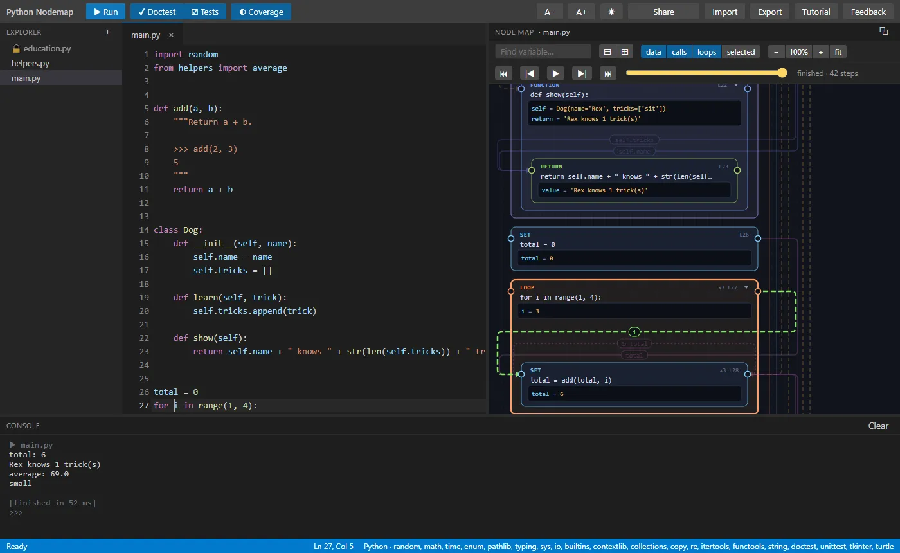
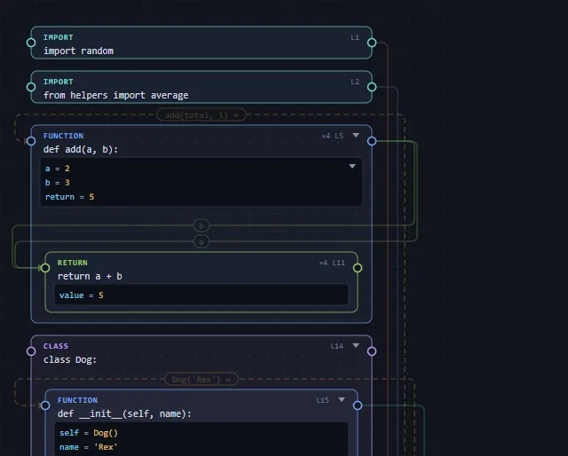
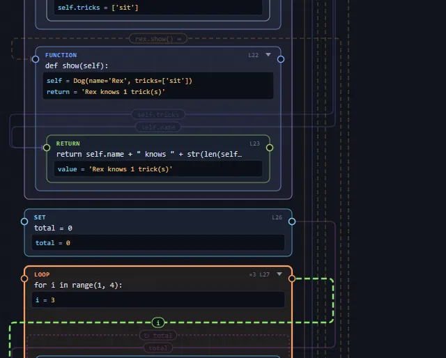
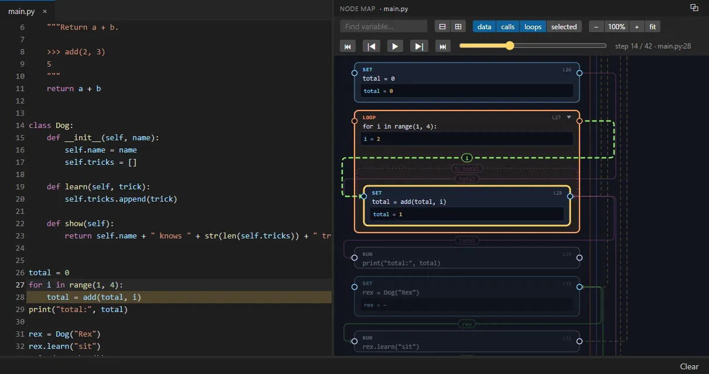
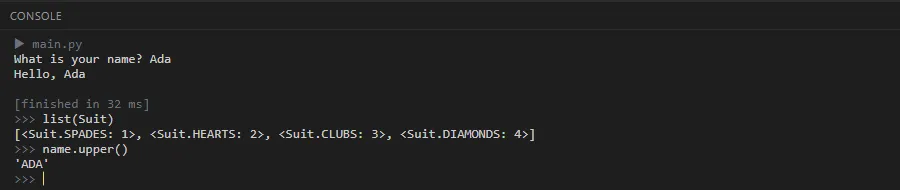
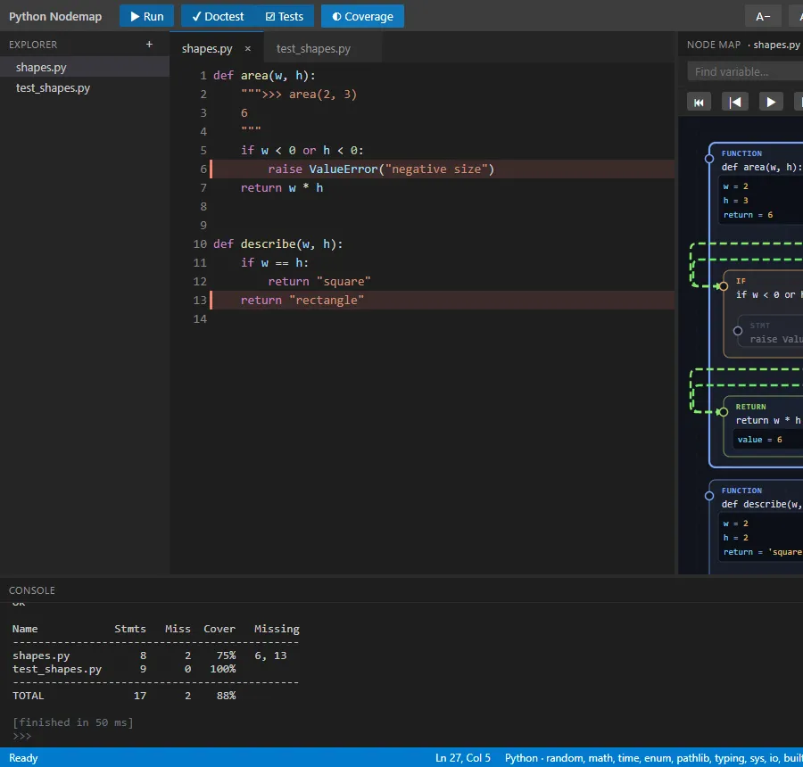
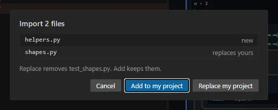
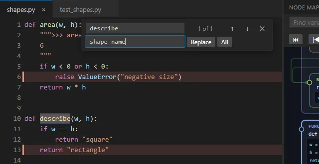

How Python Nodemap works
This tutorial was partially written by AI, and reviewed by the developer.
Write Python on the left, run it, and see your program drawn on the right: every statement as a box, with the values it made and wires showing where each value came from.
1. A quick tour

- Explorer (far left): your project's files. + makes a new one; hover a file to rename (✎) or delete (✕) it.
- Editor: write Python here. Hints (squiggles) point out likely mistakes as you type.
- Node map (right): your program as boxes and wires. It updates a moment after you stop typing.
-
Console (bottom): what your program prints, answers
to
input(), and a Python prompt after a run. - ▶ Run (or Ctrl+Enter) runs the open file. ■ Stop appears while it runs.
Everything runs in your browser: nothing you write is uploaded anywhere. Your files are kept in this browser until you change them.
2. The node map: boxes
Every statement is a box, in the same order as the code.
The coloured label says what kind of statement it is, and
L5 is its line number: click a box to jump to that
line. A box inside another box is part of its body (the
lines of a function, a loop or one branch of an
if), which is also its scope: a variable set
inside a function's box belongs to that function.

return is a box inside it. ▾ folds a body
away.
| Label | Statement |
|---|---|
| FUNCTION |
def: its value box shows the parameters of
the last call and its return
|
| CLASS |
class: its methods are the boxes inside
|
| LOOP |
for / while: shows the loop
variable
|
| IF · ELIF · ELSE | each branch, with the statements it runs inside |
| SET |
an assignment (x = …,
self.name = …)
|
| RUN |
a call on its own line, like print(x) or
items.append(3)
|
| RETURN · IMPORT · TRY · CATCH · WITH · STMT |
what they say; STMT is anything else (pass,
break …)
|
3. Values and run counts
After you press Run, each box gets a dark value box with
the variables that statement set and what they held the
last time it ran (– means it never ran).
×3 in a box's corner means it ran three times (for a
function: it was called three times; for a loop: its body
repeated three times). Boxes that never ran are dimmed, which is
a quick way to spot code your test didn't reach.
4. Wires
A wire runs from where a value is made to where it is used. It leaves a box on the right, travels down the side and enters the other box on the left; the small label on it says what it carries. Hover a box (or put the editor's cursor on its line) to light up just its wires.

-
Data (solid):
total = add(total, i)usesifrom the loop andtotalfrom the line above. - Calls (dashed orange): from the line that calls a function to the function's box; ↔ when a value comes back.
- Loops (dotted, ↻): a value one repeat of a loop hands to the next one (a running total).
The data / calls / loops / selected buttons over the map show or hide each kind; selected draws only the wires of the box you are on. Find variable… highlights every box and wire that mentions a name. ⊟ / ⊞ fold and unfold everything; − / + / fit zoom.
⧉ (top right of the map) pops the map out into its own window, which can sit on top of other windows; ⤓ or closing it puts it back.
5. Stepping through a run

After a run, the step bar above the map replays it one line at a time: ⏮ back to the start, |◀ one step back, ▶ play, ▶| one step forward, ⏭ to the end, or drag the slider. Each box's values are the ones it had right after that step, so you can watch a variable change round a loop. (The first 30,000 steps are recorded.)
6. The console

>> prompt" />input() answered in place, then Python typed
at the >>> prompt after the run.
-
input(): the console shows the question; type the answer right after it and press Enter. -
The
>>>prompt: once a run ends you can type Python into the console, and it runs with everything your program left behind:list(Suit),name.upper(), or call your functions to try them out. An expression shows its value. A block (aforloop, say) shows...until you press Enter on an empty line. ↑ / ↓ bring back what you typed before. -
Errors show a traceback: click
File "x.py", line 3to jump there. - Colours and "clear screen" codes work, so text games can redraw their board. Very long output is trimmed from the top.
7. Tests and coverage

| Button | What it runs |
|---|---|
| ✓ Doctest |
the >>> examples in the open
file's docstrings (or in a .txt file of
examples)
|
| ☑ Tests | the unittest tests in the open file |
| ◐ Coverage | runs the file, then lists the lines that never ran: write tests until there are none |
| ★ Grade | if your teacher turned it on: your grade from the teacher's tests, and a description of each one you don't pass yet |
8. Files, sharing, importing
-
Files can be
.py(they canimporteach other:import helpers) or.txt(data foropen(), or doctest examples). - Share copies a link that holds your whole project. Whoever opens it gets a copy.
- Export downloads a zip of your files, with a picture of each file's node map.
-
Import takes
.py/.txtfiles or a.zip, and asks whether they replace your project or join it:

A file with 🔒 is locked: your teacher's tests, say. It still runs (and the Tests button runs its tests), but it opens only with its password.
9. Editor tips

| Keys | Does |
|---|---|
| Ctrl+Enter or F5 | Run |
| Ctrl+F · Ctrl+H | Find (with a count: "3 of 12") · find and replace. Enter / ↓ next, Shift+Enter / ↑ previous; All replaces every match |
| Ctrl+Space | Autocomplete (it also pops up as you type) |
| Ctrl+/ | Comment / uncomment the selected lines |
| Tab · Shift+Tab | Indent · outdent |
| Insert | Overwrite mode (a block cursor; the status bar says OVR) |
| Ctrl + mouse wheel on the map | Zoom the map |
10. Good to know
- Only a set of standard modules can be imported (listed at the bottom right of the window), plus your own files.
- A program stops after 1.5 million lines (it's probably stuck in a loop); Stop ends any run at once.
-
tkinterandturtlewindows open inside the page, and stay open after the program ends until you close them. - A file you work on is saved in this browser only. Use Share or Export to keep a copy or hand it in.